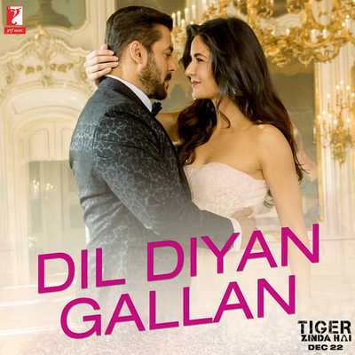
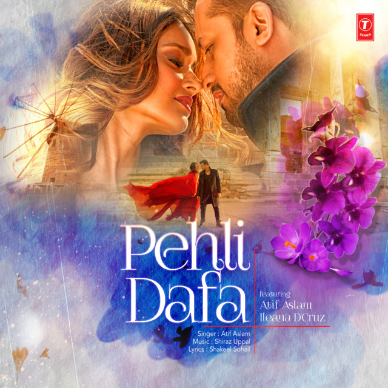

ATIF ASLAM
SINGER
Atif Aslam is a Pakistani musician. He was born in Wazirabad, Gujranwala, Punjab, pakistan and educated in Lahore and Rawalpindi.
Working together, the pair recorded the song Aadat. It became popular on different musical websites in Pakistan. The song was also played on such Pakistani radio stations as FM100 and FM105. The music video for Aadat was shot one day in a warehouse in Karachi. Due to personal problems in the band, Atif Aslam left Jal and became solo.
1.6M Followers
Atif Aslam's soulful voice crossed the Pakistani border and reached India when Bollywood director Mahesh Bhatt called Atif Aslam.
201 Tracks | 85 Albums
01

Jeena Jeena
Atif Aslam
02

Dil Diyan Gallan
Atif Aslam
03

Dil Meri Na Sune
Atif Aslam
04

Piya O Re Piya
Atif Aslam
05

Tere Sang Yaara
Atif Aslam
06

Toota Jo Kabhi Tara
Atif Aslam
07

Tu Jaane Na
Atif Aslam
08

O Saathi
Atif Aslam
09

Jeene Laga Hoon
Atif Aslam
10

Pehli Dafa
Atif Aslam